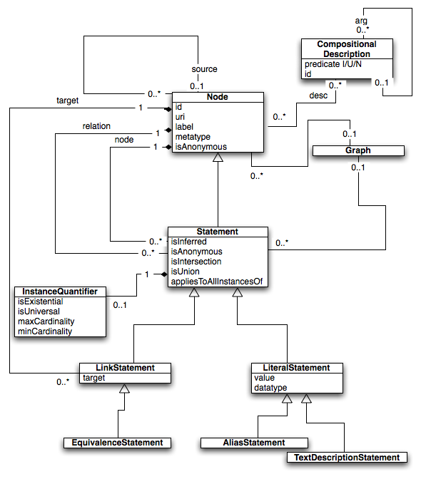

|
||||||||||
| PREV PACKAGE NEXT PACKAGE | FRAMES NO FRAMES | |||||||||
See:
Description
| Interface Summary | |
|---|---|
| Statement.StatementFilter | create implementation classes for functional-style filtering |
| Class Summary | |
|---|---|
| AnnotationNode | Deprecated. |
| CompositionalDescription | A constructing formed from a composition of other nodes. |
| EquivalenceStatement | A LinkStatement denoting equivalence |
| Graph | A collection of nodes and statements |
| GraphDiff | Collection of deltas between two Graphs |
| HomologyView | Provides a terminological view over a Graph |
| InstanceQuantifier | modifies the meaning of a Statement in terms of the class the statement is about |
| LinkStatement | A Statement connecting two Nodes |
| LiteralStatement | A Statement relating a node to a datatype literal |
| Node | Fundamental unit of representation: any entity can be represented using a Node |
| NodeAlias | A LiteralStatement used to denote an alternate label or synonym for an entity |
| NodeSet | An unordered collection of zero or more Nodes. |
| Statement | Representation of some assertion about the world |
| TermView | Provides a terminological view over a Graph |
| Enum Summary | |
|---|---|
| CompositionalDescription.Predicate | |
| LiteralStatement.Datatype | |
| Node.Metatype | |
| NodeAlias.Scope | |
Core OBD Object Model - Classes for representing Statements and related entities

The OBD Model is generic, and can be used across multiple domains. The model can be apprehended in graph theoretic terms. The nodes of the graph represent entities in the world (here entities denotes instances, universals and relations), and the edges of the graph denote statements concerning these entities. The statements can either be links between nodes in the graph (LinkStatements), or a relation between a node and a literal value type (LiteralStatement). The model also includes additional convenience constructs for representing class expressions (in OBD these are called CompositionalDescriptions) and node sets.
The ability to post-coordinate class expressions is crucial for the current driving projects for OBD. Both the DBPs and BIRN need to be able to annotate to class expressions such as
Pato:Length THAT inheresIn SOME ( SAO:Dendrite THAT part of SOME CA4Region)
See: Chris Mungall et al Representing Phenotypes in OWL Proceedings of the OWLED 2007 Workshop on OWL: Experience and Direction http://www.webont.org/owled/2007/PapersPDF/paper_40.pdf
A crucial difference between the OBD model and the RDF model is that OBD statements can have additional properties attached to them, and statements themselves can play the roles of nodes in the graph (thus it is more accurate to describe the model as a hypergraph). This is crucial for the OBD conception of an annotation: an attributable and possibly contextual statement concerning some entity or entities.
The OBD model can still be expressed in RDF, however, there is not a 1-1 correspondence between statements and triples; single statements may be require multiple triples (and, possibly, the use of either reification or named graphs).
In this way the OBD model more closely corresponds to an OWL-level model, such as the OWL1.1. API. The annotations in OBD correspond to both facts and axioms. For a clean mapping of the OBD model to OWL, the OWL1.1 proposed recommendation is required. This is because the axiom annotation constructs introduced in OWL1.1 are a natural way of modeling annotation provenance (in cases where annotations concern types, as is currently the case for the current DBP data in OBD). Note that there is as yet no agreed upon mapping of axiom annotations to RDF (brief summary: the OWL group want to use reification, the RDF group want to discourage reification in favour of named graphs, but NGs do not satisfy the requirements for axiom annotations)
|
||||||||||
| PREV PACKAGE NEXT PACKAGE | FRAMES NO FRAMES | |||||||||